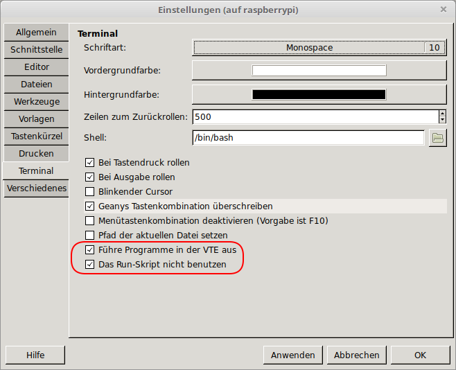

Ab Debian 10 Buster wird Geany mit GTK3 bereitgestellt. Deshalb kann es sinnvoll sein, die alte Version mit GTK2 auf der langsamen Raspberry Pi Zero zu installieren.
Beschreibung
Beim Wechsel von Raspbian mit Basis Debian 9 Stretch auf Raspbian mit Debian 10 Buster gab es auch einen Wechsel bei der Entwicklungsumgebung Geany. Statt der Version 1.29 mit GTK2, wird nun die Version 1.33 mit GTK3 zur Verfügung gestellt. GTK ist eine Bibliothek für die grafische Benutzeroberflächen (GUI) mit der Fenster, Dialog und sonstige Anzeigeelemente erzeugt werden. Leider ist die Performance von GTK3 auf der Raspberry Pi Zero merklich schlechter als bei GTK2. Falls man die alte Version als zusätzliches Programm bereitstellen möchte, hier eine Anleitung.
Installation
Geany 1.33 GTK3
sudo apt-get install geany stterm libvte9 libvte-2.91-0
Geany 1.29 GTK2
mkdir geany
cd geany
wget http://mirror.inode.at/raspbian/raspbian/pool/main/g/geany/geany_1.29-1_armhf.deb
unp geany_1.29-1_armhf.deb
unp data.tar.xz
sudo cp usr/bin/geany /usr/bin/geany-gtk2
sudo mkdir /usr/lib/arm-linux-gnueabihf/geany-gtk2/
sudo cp -rv usr/lib/arm-linux-gnueabihf/* /usr/lib/arm-linux-gnueabihf/geany-gtk2/
mkdir common
cd common
wget http://mirror.inode.at/raspbian/raspbian/pool/main/g/geany/geany-common_1.29-1_all.deb
unp geany-common_1.29-1_all.deb
unp data.tar.xz
sudo cp usr/share/geany/geany.gtkrc /usr/share/geany/
sudo apt-get install libfreetype6 libfontconfig1 libgtk2.0-0 libpangoft2-1.0-0
Aufruf geany mit GTK2:
LD_LIBRARY_PATH=/usr/lib/arm-linux-gnueabihf/geany-gtk2/ geany-gtk2 &
Einstellungen
Nach der Installation gab es beim Starten eines Programms immer das Problem, dass das Terminal Programm mit dem entwickelten Programm nicht ausgeführt wurde.

Das Problem kann gelöst werden indem man den internen Terminal für das Ausführen des Programm benutzt.
Bearbeiten -> Einstellungen bzw. Strg+Alt+P , Reiter Terminal
Die Optionen “Führe Programme in der VTE aus” und “Das Run-Skript nicht benutzen” müssen aktiviert werden.
